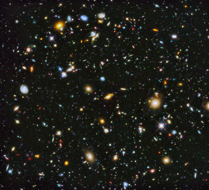
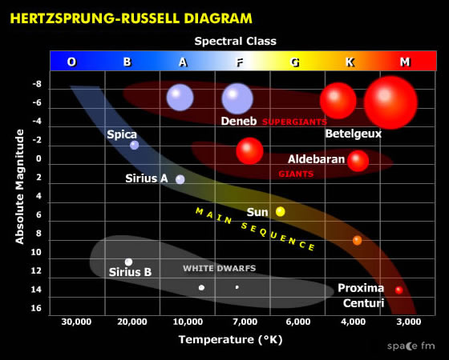
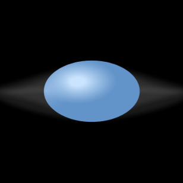

Starting from the history of star classification in the millinniums, this interesting note will take you through some of the very basic concepts on emission-line stars. You will be able to understand what they are and why these type of stars are my special children. The article will pose a number of very fundamental yet unresolved questions on these groups waiting to be unraveled from the nature. PS: You will not regret opening this link!

Figure 1: The most comprehensive Hubble deep field image of the evolving universe. Image source:Hubblesite .
Author’s note:
I can stare all day at the image above showing details of a large number of Galaxies and stars which are the building blocks of the visible universe we know. The expanding universe, the infrared afterglow, litter from the most distant parts of our universe, remind me of the nearer still, the largely unaffected bounty of the space in my presence. Even being an ignorant survival, these depths and darkness leading one to their origin are intriguing.
Introduction:
The best way to understand a system is to observe and question their behavior leading to logical reasons. In this manner, for ages, many incredible minds have corroborated the nature of stars, observed them over years, mapped their positions to good accuracy, and questioned their fundamentals, for many which even today we do not know answers to. As a first step towards this process, we explore the different types of stars and their nature using the stellar spectral classification.
Stellar classification:
The oldest ever known catalogue of stars in the sky dates back to the 2nd millennium BC (1531- 1155 BC), which upgraded in number over years. But, the catalogued stars were classified into different categories based on their observable properties only by the late 19th century. Through observations, we understand that stars differ in colour and temperature. To understand these observable differences, we categorized stars based on their temperature into different ‘stellar spectral types’, assigning one alphabet for each class. The sequence of stars presently adopted, begins with the hottest stars, class O, and proceeds from hot to cool in the order: O, B, A, F, G, K, and M. Most of the stars in the visible universe can be classified into one of these groups.

Figure 2: The HR-diagram of stellar classifications. The X-axis shows different spectral types from hot massive O stars to cooler M stars. Image source: Astronomytrek .
{kind=link}
Hot massive stars usually include stars in the spectral type range O to A. It is interesting though that the physical properties, internal structure, chemical nature, and the observables of hotter stars are very different from that of their cooler counterparts. A special category of these hot stars is the emission-line stars which show prominent emission features in their spectrum. A closer look into this category reveals that not all hot massive stars show emission-line signatures. To date, we have insufficient details to explain why this nature is not universal. Many interesting studies have been conducted to date in examining the observational properties and statistical nature of these emission-line stars.
What do we know about emission-line stars?
As mentioned earlier, the term emission-line stars (ELS) denote stellar objects that show emission features in their spectrum. In general, hot ELS include Classical Ae/Be type stars, Herbig Ae/Be type stars, Wolf-Rayet stars, supergiants, etc. The mechanism of the emission-line formation differs between each of these classes. Taking into consideration Classical Ae/Be stars, a group of ELS enclosing hot massive Oe, Be, and Ae stars (where ‘e’ stands for emission). The emission lines in this group of stars are known to originate from a cooler disk-shaped envelope surrounding the star. The disk is composed of ionized gas and surrounds the star equatorially. The mechanism of such a gaseous equatorial disk formation is termed the Be phenomenon.

Figure 3: An artistic impression of a Classical Be star. Note the presence of a circumstellar envelope in the shape of a disk surrounding the star. Image source: Wikimedia commons .
Classical Be and Classical Ae stars
As mentioned earlier, I consider Classical Be (CBe hereafter) and Classical Ae (CAe hereafter) stars as one of the very interesting classes of objects. After 150+ years of their first detection, these stars still pose a great challenge in understanding them completely. The most fundamental (yet unresolved) question about these stars is that, Why do these stars form a circumstellar disk? It has to be noted that not all B-type stars are CBe stars, not all A-type stars CAe stars. Why do we see a selection for this emission mechanism in nature?. The better we study these stars in detail, the better we get to understand them.
This research article titled Identification of new Classical Ae stars in the Galaxy using LAMOST DR5 intends at compiling the very first homogeneous catalogue of the CAe stars from our Galaxy.
Identification of Classical Ae stars.
This article makes use of one of the largest spectroscopic databases of the Galaxy – Large sky Area Multi-Object fibre Spectroscopic Telescope (LAMOST), undertaken by the Chinese academy of sciences, situated at Xinglong Station, China. They identified about 4,789 A-type emission-line stars (Hα shows emission profile) from the LAMOST database. As quoted previously, many types of objects can show this emission feature. To identify the CAe stars, they made use of the infra-red photometric properties. The idea behind this selection is that the circumstellar disk of CBe/CAe stars will give rise to additional flux excess in the infrared region of the electromagnetic spectrum. By filtering out stars showing this additional flux, the team identified 159 new CAe stars from the Galaxy.
CBe stars versus CAe stars
From Figure. 2 we understand that A-type stars are comparatively cooler than B-type stars. Hence, the CAe stars are considered cooler counterparts of CBe stars. Though these systems show a similar presence of circumstellar disk, it is important to understand how their disk properties change concerning their temperature. This study provides a dedicated section on comparing the observed spectroscopic features of CBe stars and the CAe stars. They were able to predict that the CAe stars could host smaller disks compared to CBe stars. Apart from hydrogen, this study identified the presence of ionized metallic lines of FeII, Ca II, OI, etc in the spectra of the CAe stars and that these features are similar to that of CBe stars.
This article provided new insights on the nature of the CAe stars and motivates the research community to study further study and compare them to CBe stars for a better understanding of the Be phenomenon.
Original paper: Identification of new classical Ae stars in the Galaxy using LAMOST DR5
First Author: Anusha.R
Co-authors: Blesson Mathew, B.Shridharan.; R.Arun, S.Nidhi, Gourav Banerjee, Sreeja S Kartha, K.T.Paul, Suman Bhattacharyya
First author’s Institution: Department of Physics and Electronics, CHRIST (Deemed to be University), Bangalore 560029, India